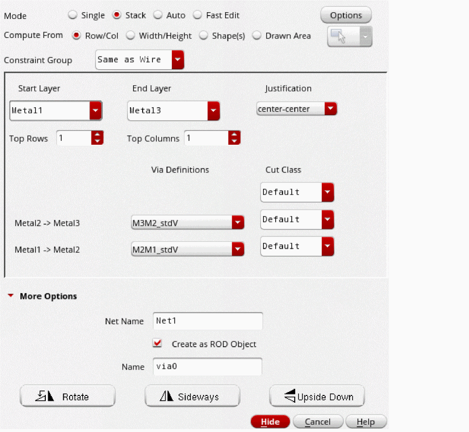

Creating a Stack Via
You can create a via stack by physically stacking vias belonging to adjacent layers on top of each other. The footprint of each via in the via stack matches the footprint of the top via layer. This ensures that the metal shapes across all vias in the via stack coincide. Vias in a via stack have the same origin. If a via stack has connectivity, all vias in that via stack have the same net name.
By default, in Stack mode, the via width, length, row and column spacing, and the enclosure values are derived based on the calculation mode set in the Via Parameters Calculation Mode list in the Layout Editor Options form.
You can use via variants for creating a via stack. Such via stacks can be edited by using both the Edit Via Properties form and the Property Editor assistant.
In the following example, the figure on the left is an M5M9 via stack created using the Stack option in the Create Via form. The figure on the right shows the constituent vias M5M6, M6M7, M7M8, M8M9 of the via stack.
-
In the layout window, choose Create – Via or click the Create Via icon
 on the Create toolbar.
on the Create toolbar.
Alternatively, right-click any free space in the design canvas to display the Layout shortcut menu and select Create – Via.
The Create Via form opens. -
Select the Stack option.
The lower portion of the form updates to display the Start Layer and End Layer lists. - Use the Options button if you want to set up the default viaDefs to be available during the via creation and to enable overriding of the via variant parameters.
- Specify the Net Name you want to associate with the via stack, in the More Options section of the form. If the specified net does not exist, a new net is created. If you leave this field blank, no net is associated with the via stack.
- Optionally, select Create as ROD Object to create the via stack as a ROD object. You can specify a name in the Name field.
-
In the Start Layer and End Layer lists, select the layers between which you want to place the via stack. After you specify both Start Layer and End Layer values, the form updates to display all the vias available between the two selected layers.
 - Specify the number of Top Rows and Top Columns you want in the via stack.
-
Select a viaDef for each layer pair from the Via Definitions list.
- Click on the canvas where you want to place the via stack.
-
To rotate or mirror the via stack as you place it, click Rotate, Sideways, or Upside Down and then place the via stack. After placing the via stack, each time you click any one of these buttons, the via stack is further rotated or mirrored.
Alternatively, you can click the middle mouse button to replicate Rotate, pressCtrland click the middle mouse button to replicate Sideways, or pressShiftand click the middle mouse button replicate Upside Down.
Using the Property Editor assistant, you can edit the layers of the via that is part of the via stack from the via stack. You cannot edit the layers from the via object.
In addition to Stack mode in the Create Via form, you can use any of the following ways to create a via stack:
- Auto mode on the Create Via form on two intersecting and non-adjacent routing layers
- Single mode on the Create Via form and stacking the vias manually
- Create – Wire command while switching from one routing layer to a non-adjacent routing layer
Related Topics
Attributes in the Edit Via Stack Properties Form
Return to top